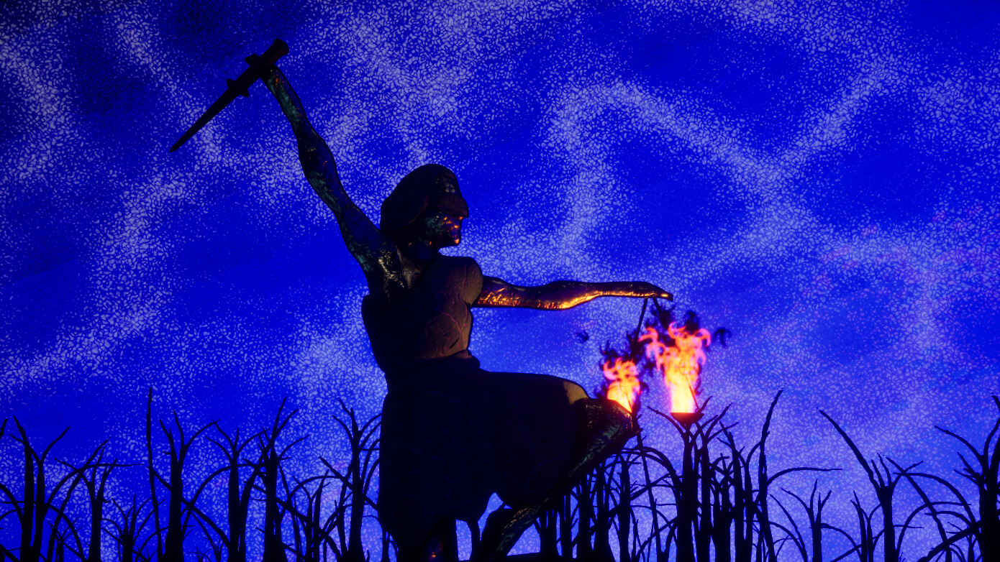
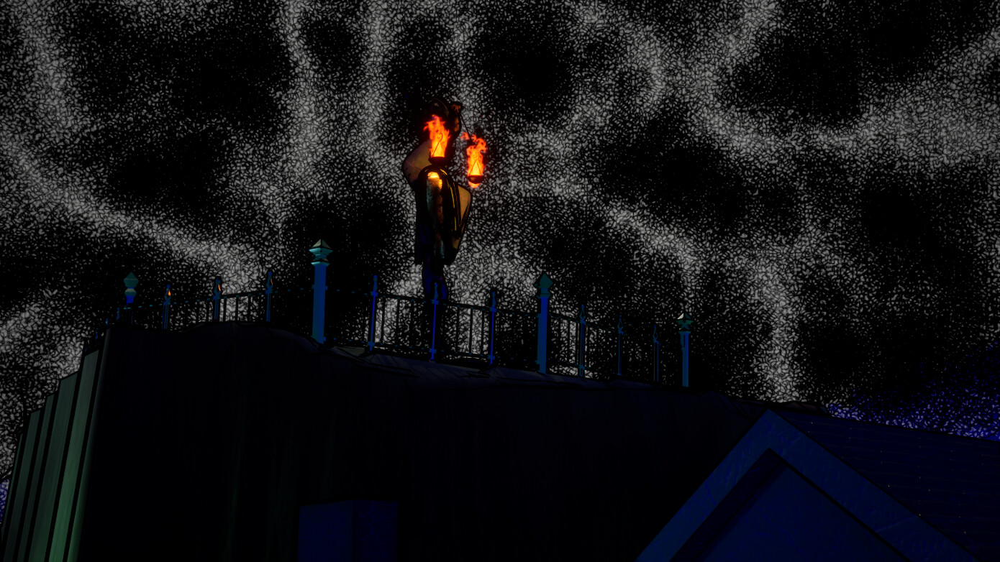
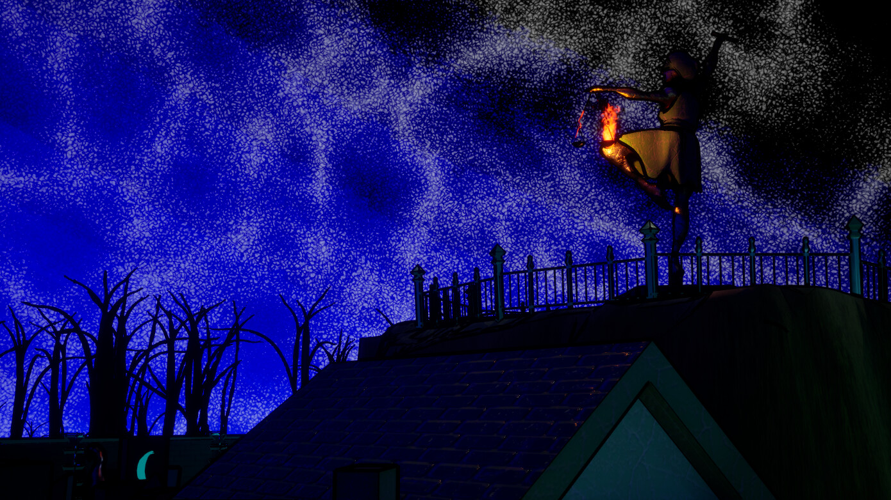

A stylised 3D environment focused on atmosphere, silhouette, and lighting contrast.
The scene is built around a central statue acting as both a visual anchor and narrative focal point, framed against a high-contrast sky and surrounded by jagged, skeletal forms to reinforce a sense of unease and isolation.
The primary goal was to explore how limited colour palettes and strong lighting direction can define form, guide attention, and establish mood without relying on complex geometry.
Key Focus
- Silhouette readability and composition
- Contrast between cold ambient light and isolated fire sources
- Controlled use of colour to guide visual hierarchy
What I’d Improve
- Refine the sky treatment to reduce visual noise and better integrate it with the scene
- Push fire lighting to more strongly define surface form and material response
- Simplify foreground elements to improve clarity and focus on the main subject

